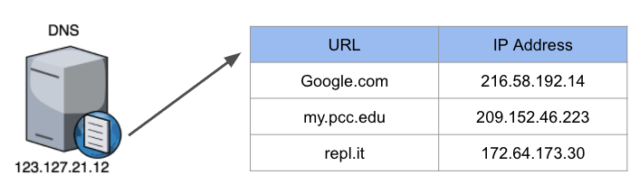
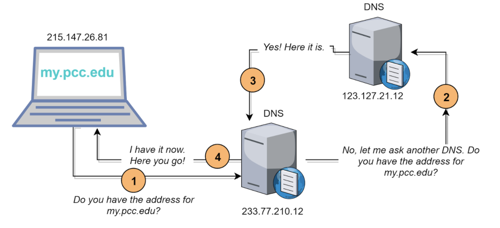

Lesson 8 - The Need for DNS
At the end of this lesson, you will be able to:
- Explain how URLs like www.pcc.edu are translated into IP addresses.
- Explain how the DNS helps the internet scale.
Domain Name Server (DNS)
Devices are joining and leaving the Internet all the time. IP addresses don't stay constant. If you go to a coffee shop or restart your router your device might be assigned a new IP address. If IP addresses are switching, it's very hard for each computer to keep an accurate list. It would make more sense if there were one system that kept track of all that information.
If we want the Internet to scale up to billions of devices, then we need a way to figure out every device’s IP address! When you connect to a website (example: my.pcc.edu) the IP address is looked up on a DNS (Domain Name System) server. The DNS is like a big phone book for IP addresses!

Hierarchy of servers

The video below starts at 4:09 to finish off the discussion of the DNS. As you watch the video, take notes on how the DNS solves the problem of translating names like www.pcc.edu into an IP address, and how the DNS helps the internet scale.
DNS lookup
Open the DNS Lookup tool to find the IP address for any website. Type in www.pcc.edu. What is the IP address? Most humans find it easier to remember words, rather than numbers. If you tell someone to go to www.pcc.edu, they can probably remember that. If you told them to go to 209.152.46.213, they would have a difficult time remembering an IP address.
Thoughts
Hopefully, we all get the basic idea: the DNS is a large-scale system that translates human-readable web addresses into their numeric IP addresses so that computers can communicate. This system, however, was not designed to be secure, which has resulted in some major security incidents over time. In Lab 2, you will learn about some of them and how they work.
Computing & Society: Who Has Access?
We've been talking about how the internet works — DNS, IP addresses, packets, protocols. But there's a more basic question we haven't asked: who actually gets to use it?
Roughly 2.6 billion people worldwide still don't have internet access. And even in the US, the gap is real — it falls along predictable lines of income, geography, and race. "Just google it" is advice that assumes a lot about the person you're talking to.
Net neutrality is another piece of this. Should internet service providers be allowed to make some websites load faster than others — say, because those sites paid extra? If you've ever been frustrated by a slow-loading page, imagine that slowness being intentional, applied to services that compete with what the ISP wants you to use instead. The technical infrastructure we've been studying in this unit isn't neutral — the people who control the pipes have a lot of power over what flows through them.
Something to think about:
Think about something you did online today that you take for granted — checking your email, looking up directions, submitting homework. Now imagine you didn't have reliable internet at home and had to go to a library or coffee shop every time. How would that change your day? Your semester?